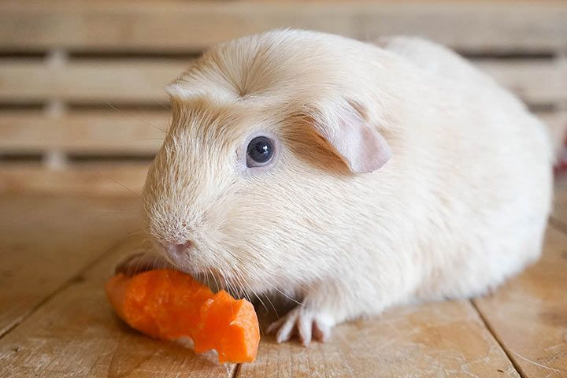

- Świnki krótkowłose
- Amerykańska (American)
- Rozetka (Abyssinian)
- Czubatka (Crested)
- Czubatka biała (American Crested)
- Misia (Teddy)
- Królewia (Rex)
- Grzbietka (Ridgeback)
- Grzbietka czubata (Crested Ridgeback)
- Kędzierzawa (Curly)
- Świnki bezwłose
- Mizerotka (Skinny)
- Balwin (Baldwin)
- Świnki długowłose
- Peruwianka (Peruvian)
- Alpaka (Boucle)
- Jedwabia (Sheltie)
- Królewia jedwabia (Texel)
- Czubatka królewia (Coronet)
- Czubatka kędzierzawa (Merino)
- Angorka (Angora)
Amerykańska (American)

Świnka ma krótkie, gładkie i przylegające do ciała futerko. Występuje niemal
w dwudziestu kolorach. Długość włosia wynosi ok. 18mm. Widziana z góry ma tułów mniej więcej
równej szerokości, a głowę zakończoną okrągłym noskiem. Jest największą, najstarszą i najbardziej
znaną rasą, która pojawiła się w Europie już w XVI wieku. Znana, ze swojego przyjaznego usposobienia,
dobrze dogaduje sie z innymi świnkami. Jest dosyć łatwa w hodowli, ponieważ sama potrafi zadbać o swoje futro.
Rozetka (Abyssinian)

Czubatka (Crested)

Czubatka biała (American Crested)

Misia (Teddy)
Królewia (Rex)

Grzbietka (Ridgeback)

Grzbietka czubata (Crested Ridgeback)
Kędzierzawa (Curly)

Mizerotka (Skinny)
Balwin (Baldwin)

Peruwianka (Peruvian)

Alpaka (Boucle)
Jedwabia (Sheltie)

Królewia jedwabia (Texel)

Czubatka królewia (Coronet)
Czubatka kędzierzawa (Merino)
Angorka (Angora)